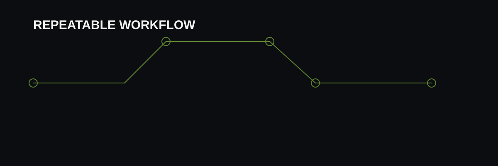

E-commerce Operations × Digital Automation
Experience spanning product data, inventory, fulfillment, vendor workflows, websites, SEO, digital marketing and practical automation.
One focused destination combining the related information without removing the original pages or URLs.
Experience spanning product data, inventory, fulfillment, vendor workflows, websites, SEO, digital marketing and practical automation.
Google Sheets, Apps Script, JavaScript, HTML/CSS, APIs, Supabase, PostgreSQL, Auth, Storage, Row Level Security, SEO, digital marketing and AI workflows.
BA (Hons.) Economics at Banaras Hindu University · CUET Reasoning 99.43 percentile · Class 12 Commerce.
The full resume remains available with recruiter, ATS and detailed modes, plus Print / Save PDF.

Prince Dixit is a multidisciplinary professional with experience across e-commerce operations, digital marketing, SEO, sales and technical automation. His profile is strongest where business requirements and implementation meet: organizing operational data, improving workflows, supporting online growth and building tools that reduce repetitive manual effort.
Technical areas include Google Sheets, Google Apps Script, JavaScript, HTML, CSS, Supabase, PostgreSQL, APIs and AI interfaces. Business areas include inventory, order fulfillment, purchasing, supplier coordination, website support, on-page SEO, Meta Ads and customer communication.
This profile is intended to give recruiters and collaborators a concise picture before they explore the detailed experience, projects and resume.